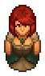

Miss Chain
| Miss Chain | |
|---|---|
 | |
Basic Information
| |
Location :
|
The Dead Horse |
Role :
|
Horadric's wife |

Miss Chain is Horadric's wife, the innkeeper of The Dead Horse, and an ex-priestess.
She is one of three NPCs (the other two being Horadric and Vagner) present at the tavern on all of the six days irrespective of day/night.
Quests
Visit Clotho
After you brought back Ms. Charm the bad news about her
necklace, she wants Miss Chain's
perfume. In order to get it from her, you have to deliver a
Basket of food to her sister Clotho, and bring back 12×
Frog as ingredients for creating more
perfume. For this you'll receive a total of 20  and you can get the
and you can get the
perfume from her.
Trades
Selling
She sells four cookery technology recipes.
|
||||||||||||||||||||||||||||||||||||||||||||||||||